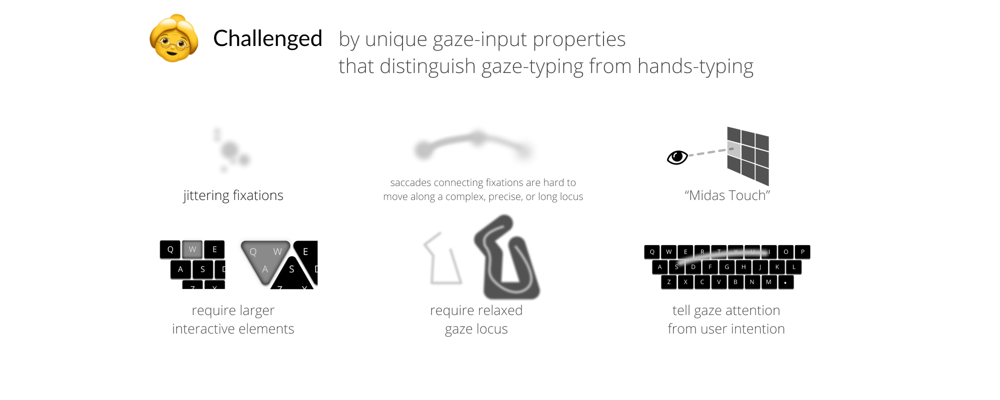
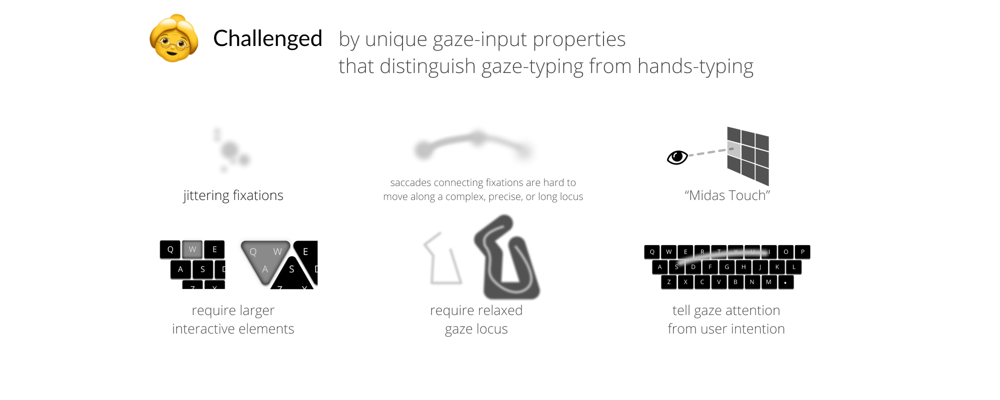

Keyboard usability observations and a "tolerant" keyboard prototype.
 


Q1 details.
Q2 details.
Q3 details.
Independent work presented by me | Feb. - Oct. 2018
User study data analysis used python, keyboard system prototyped as a Windows application with C#/.NET/WPF/MVVM, graphic illustration used Figma and Photoshop
Project is conducted as my master thesis (grade A, excellent; defence slides) at Tobii Dynavox for people with speech and motor impairments
♥ I thank Malin Ivarsson, Jaén Cantor, SWAT team, and my friends for their guidance and supports of user studies, prototype development, report review and excellent questions in my thesis defence, thank Haibo Li and Anders Hedman for their insightful comments, and thank Antti Oulasvirta and Anna Maria Feit for their related research and impressive teaching to inspire this work